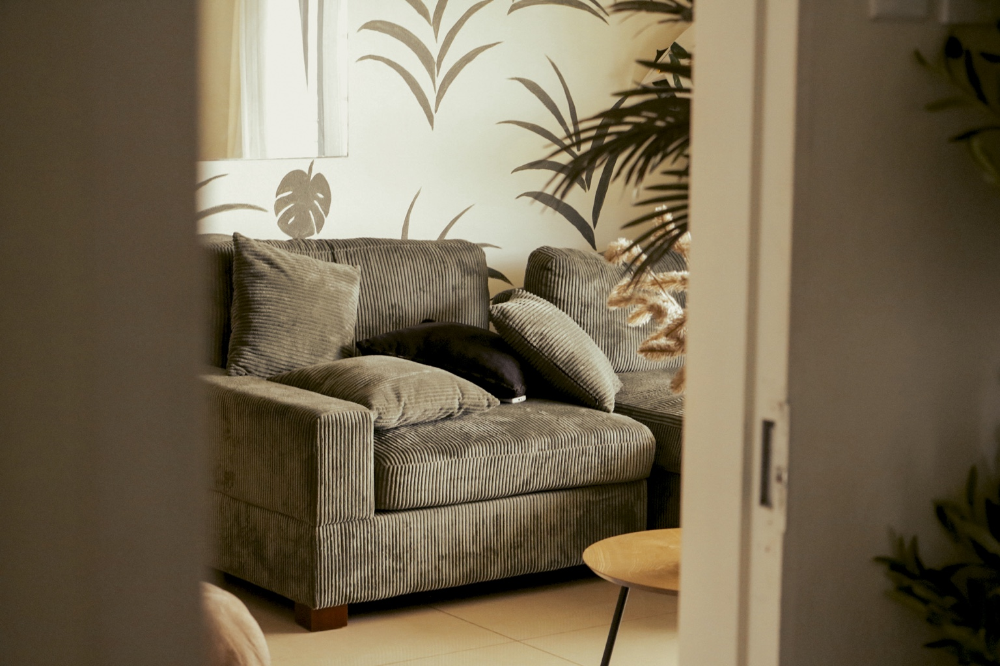
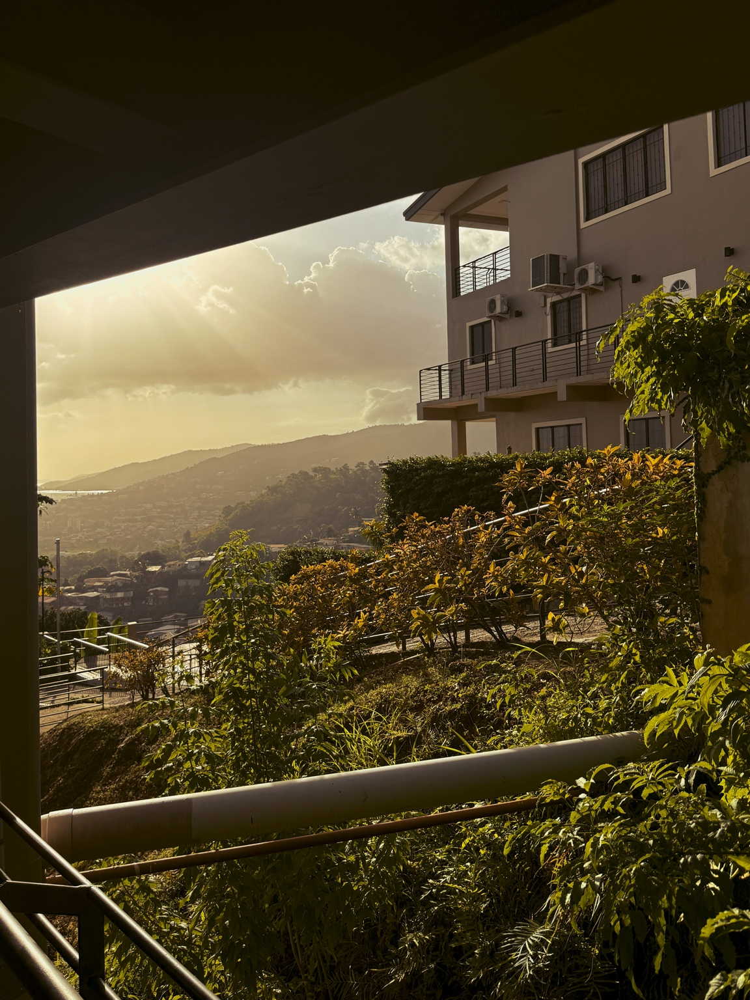
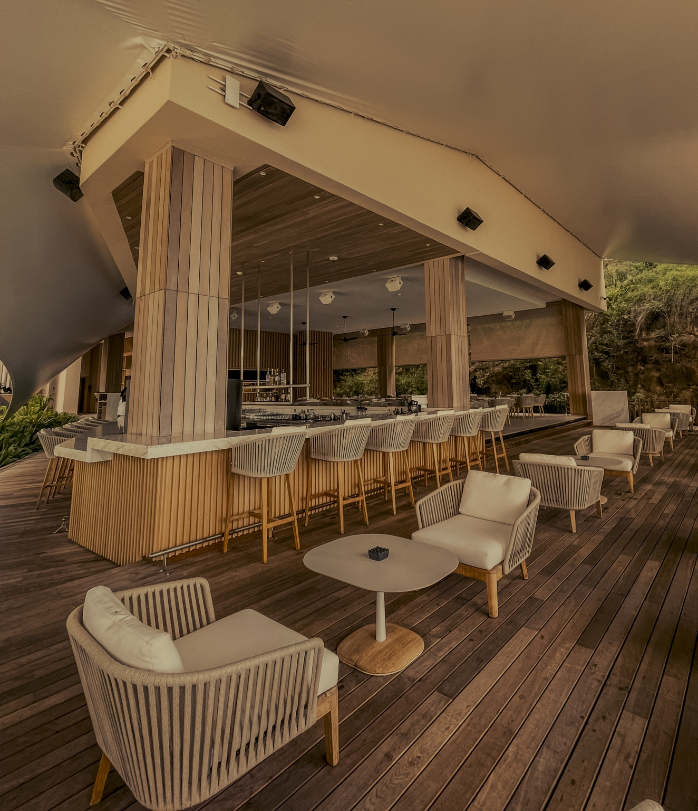
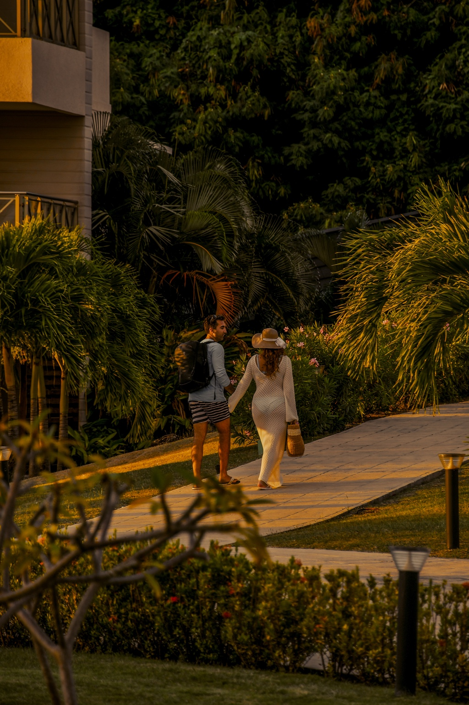
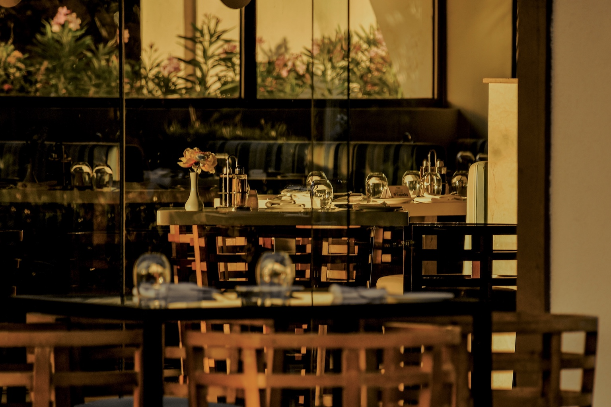
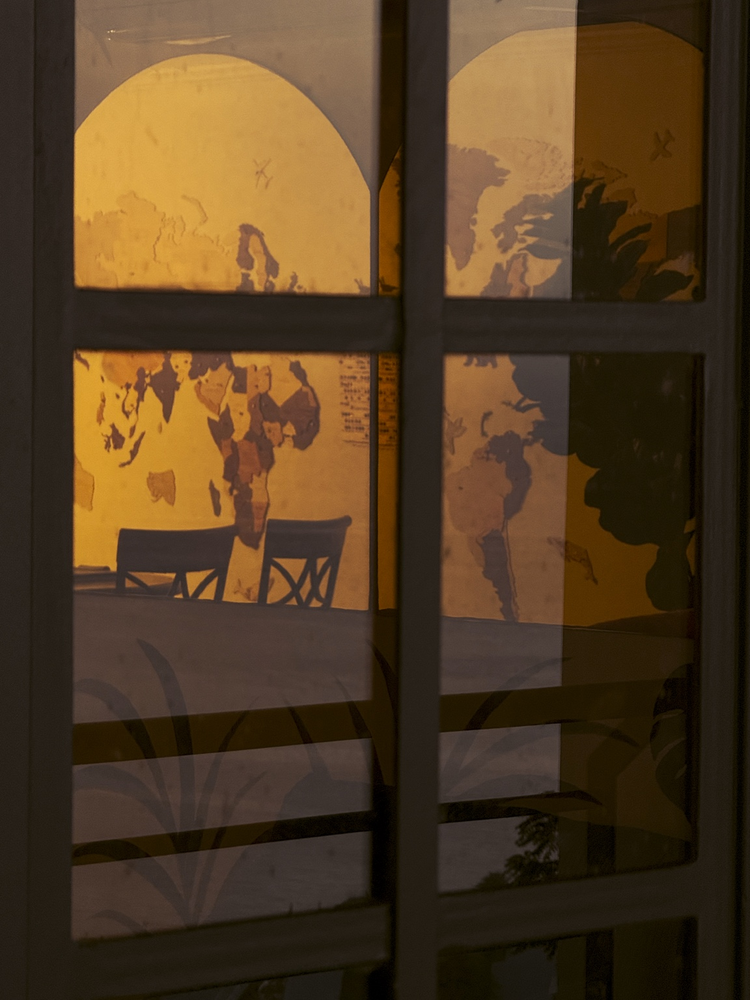
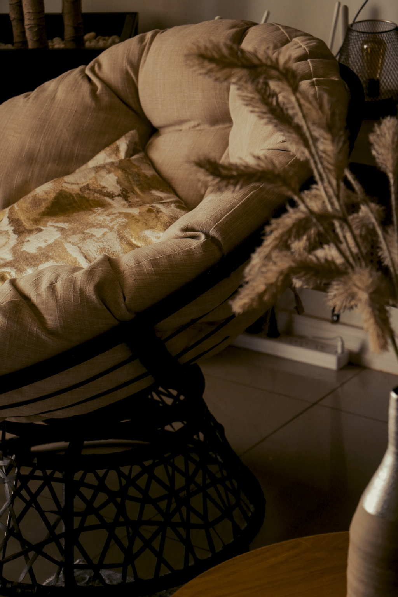

A place, made unmistakable.

Properties change. Their imagery stays in circulation.
Rooms are repainted. Restaurants change hands. A wedding lawn becomes the reason guests book. The same photographs keep defining the property online.

Decide, then produce.
Read the property
Guests, bookings, competition and the current image set.
Decide the perception
What should lead, what should support it and which moments carry the idea.
Produce deliberately
Photography and film built for the property's actual channels.
A reading of each place.






Visual Direction & Production
Commercial photography and film for openings, renovations, repositioning and properties ready for a current image set.
See how it worksBuilt from inside hospitality.
Katia Pérez spent three years leading sales and operations inside resorts in Mexico and the Caribbean, across guest experience, weddings, revenue, teams and hotel partnerships. That experience now directs how EXIF reads and photographs a property.
Start a project